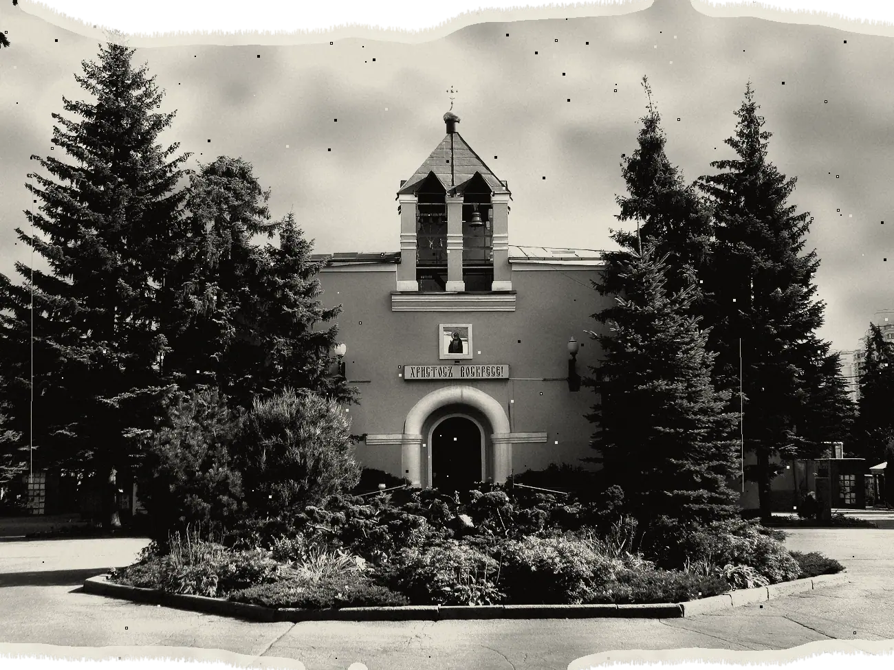
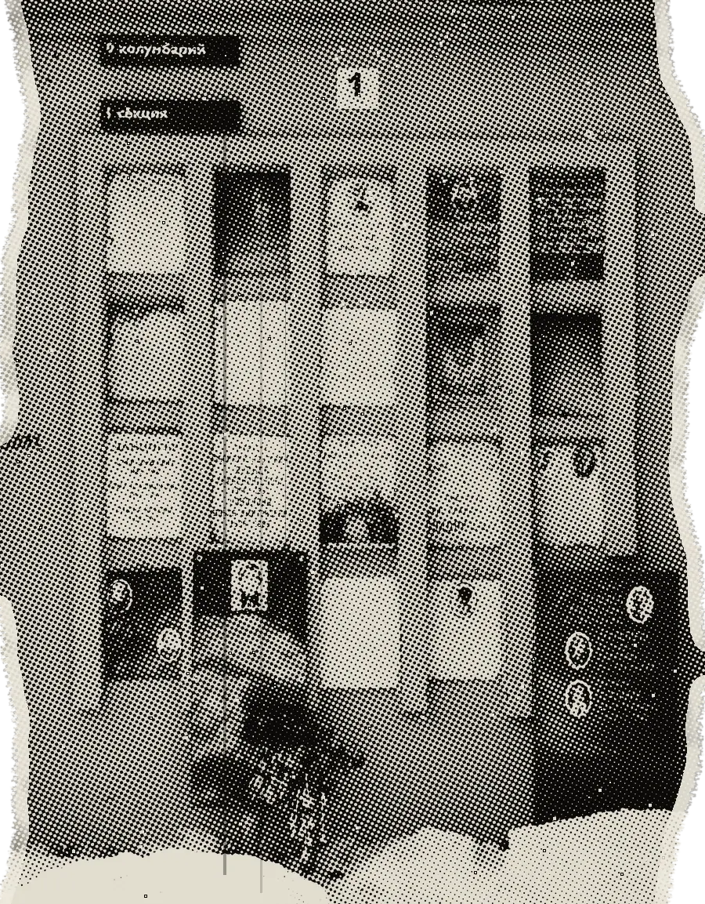
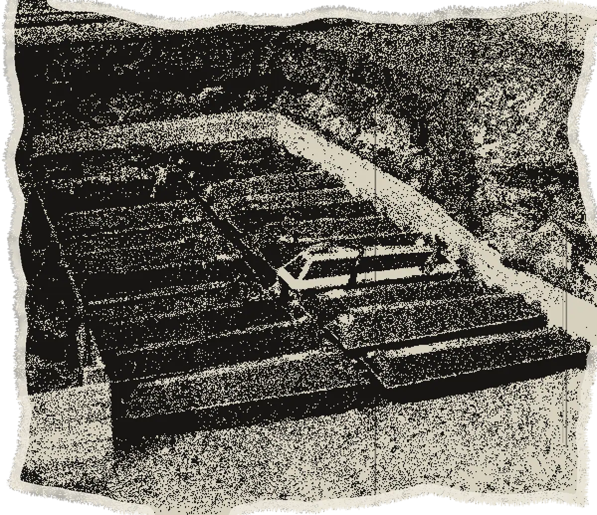
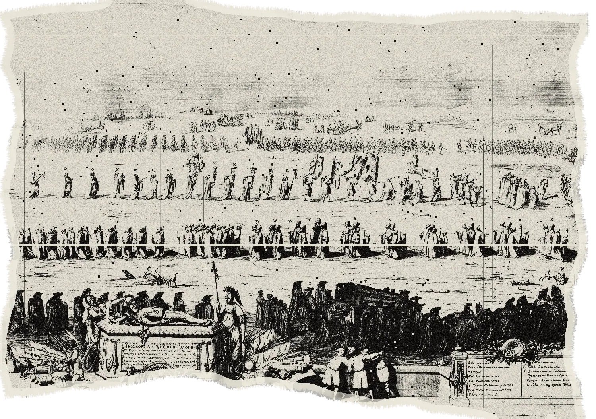

ТОМ IV · ЛИСТ K · 02 / 07
СОВЕТСКОЕ ЗАГРОБЬЕ
Кремация, гражданские похороны и индустрия, пришедшая следом
Гражданские похороны без священника, кремация в бывшей церкви и похоронный рынок, как они видны главным образом по московским источникам.
1920-е — 2020-е · Москва; Санкт-Петербург; Россия · Государственный светский ритуал; православное возрождение; коммерческие похоронные услуги

K / 01
Крематорий в церкви
Первый московский крематорий устроили в здании церкви при Донском монастыре — церкви преподобного Серафима Саровского и святой Анны Кашинской. Страница московского путеводителя называет её недостроенной и не освящённой до революции, православный сайт — перестроенной церковью. По архивному сайту «Тэхне», за выставкой моделей крематориев в музее коммунального хозяйства Москвы в январе 1925 года последовал конкурс проектов; со ссылкой на журнал 1926 года он называет три работы (Дьяков, Мельников, Осипов), первую премию отдаёт Осипову и сообщает, что жюри требовало здания, которое ни снаружи, ни внутри не напоминало бы церковь. Любительская страница также называет архитектором перестройки Дмитрия Осипова. Печь, пишет православный сайт, поставила немецкая фирма «Топф и сыновья».
Даты расходятся на день-два. Соколова называет открытием 12 января 1927 года; любительская страница — пробное сожжение тела рабочего 11 января, а «Тэхне» датирует первую пробную кремацию 29 декабря 1926 года. Официальное открытие — 6 октября 1927 года по базе «Мемориала» и по «Тэхне» (там добавлено, что в тот день состоялась первая плановая кремация), 7 октября на любительской странице.
Позднее здание использовали для террора. База «Топос» «Мемориала» фиксирует, что в Донском сжигали тела расстрелянных в Москве — документально с 1934 года, более ранние случаи возможны, — а прах закапывали на Новом Донском кладбище.
K / 02
Гражданские похороны
У советских похорон не было священника. В 1920-е «красные похороны» были шествием на кладбище: впереди музыканты, комсомольцы несут красный гроб, за ними флаги и революционные песни, а у могилы — гражданская панихида с почётным караулом и речами. Соколова заключает, что в 1920-е такие похороны были редки и оставались политическим жестом узкого круга молодых активистов.
Её цифры: в Москве 39,9 % похорон 1925 года и 40,4 % 1926-го прошли без церковной службы, то есть около шести из десяти по-прежнему с ней; в Тамбовской губернии за первый квартал 1927 года зафиксировано девять гражданских похорон на всю губернию. Она пишет, что 1960-е принесли государственную кампанию за социалистическую безрелигиозную обрядность с местными комиссиями, а похоронные обряды есть лишь в некоторых из её методических сборников. Статья прочитана только в пересказе.
Институциональная секуляризация похоронного дела прошла через чёткие законодательные этапы. Декрет Совета Народных Комиссаров от 7 декабря 1918 года изъял кладбища из духовного ведомства, передав их в ведение местных Советов и положив начало гражданской обрядности с траурными оркестрами и речами у могилы. Государственная монополия достигла высшей точки с открытием Донского крематория в 1927 году. После распада СССР Федеральный закон № 8-ФЗ от 12 января 1996 года («О погребении и похоронном деле») демонтировал советскую систему: он закрепил за гражданами право на гарантированный перечень бесплатных услуг по погребению, одновременно открыв рынок ритуальных услуг для частных коммерческих бюро и мастерских.

| Дата | Событие | Источник |
|---|---|---|
| 10 окт. 1723 | Указ: хоронить при городских церквах только знатных; не исполнен | Розанов (1868); «Православная энциклопедия», «Надгробие» |
| 1771–72 | Чума в Москве; кладбища открыты за городом, среди них Ваганьково | Розанов; Mos.ru, история Ваганькова |
| 1925 | Конкурс проектов московского крематория | Tehne (цитата из журнала 1926 года) |
| 12 янв. 1927 | Крематорий открыт в Донском (пробное сожжение 11 янв. по одной странице) | Соколова (2013) |
| 6 окт. 1927 | Официальное открытие | «Мемориал», «Топос» |
| с 1934 | В Донском сжигают тела расстрелянных в Москве (документально) | «Мемориал», «Топос» |
| 9 мая 1960 | Открыт Пискарёвский мемориал | Музей Пискарёвского кладбища |
| 8 мая 1967 | Открыта Могила Неизвестного Солдата | Mos.ru / Главархив |
| март 1972 | Завершён Николо-Архангельский крематорий на востоке Москвы | Guinness World Records |
| 12 янв. 1996 | Федеральный закон «О погребении и похоронном деле» | Федеральный закон № 8-ФЗ |
K / 03
Похоронный рынок, Москва, 1996–2012
Федеральный закон от 12 января 1996 года «О погребении и похоронном деле» гарантирует родственникам бесплатный перечень услуг по погребению, который оказывает специализированная служба (статья 9). В июне 2012 года (21 июня), сообщает The Moscow Times, глава городского департамента торговли и услуг заявил, что коммерческие функции — рытьё могил и перевозка гробов — перейдут от муниципальной компании «Ритуал» к частным фирмам. По тому же сообщению, рынок похоронных услуг Москвы оценён более чем в 12 млрд рублей, кремация составляет 44 % московских погребений, а кладбищ 71, и только два из них открыты для новых захоронений.
Это московские цифры из одного газетного сообщения, они ничего не говорят об остальной России. Прочитанные источники не охватывают 1991–1995 годы и время после 2012-го и не показывают, как возвращались церковные похороны.

K / 08
Храм безбожия, затем предприятие
Исследование А. Д. Соколовой о кремации 1920-х годов утверждает: в СССР решение о том, как поступать с телами умерших, перешло к гражданским властям, которые исходили из санитарии. И всё же первый проект, петроградский, назывался «Крематориум-Храм» и должен был создавать в массах духовное настроение. К второй половине десятилетия, когда в Москве строили Донской крематорий, по её аннотации, технология стала значить больше, чем квазирелигиозное оформление. Поздняя история тоньше. Запись рекордов описывает Николо-Архангельский крематорий на востоке Москвы, завершённый в марте 1972 года, с семью двойными печами и шестью траурными залами. Одна любительская страница пишет, что Донская печь закрыта в 1973 году и в 1990-м перестроена в церковь; другая — что настоящие кремации шли там до 1973 года, затем лишь символические, а тела сжигали в Николо-Архангельском, что крематорий окончательно закрыт в 1990-х и что службы идут с 1998 года; «Тэхне» пишет, что церковь возвращена в 1992 году; страница московского путеводителя согласна лишь в том, что в 1970-х крематорий перестал работать, а в 1990-х главный корпус получила церковь. Год атлас не решает.




Аппарат источники · связанные листы · термины
Источники этого листа
- pravenc-nadgrobie Православная энциклопедия — Надгробие (2000– (издание продолжается))
- vagankovo Mos.ru (официальный портал города Москвы) — Материалы по истории Ваганьковского кладбища (б. д.)
- mos-ru-unknown Mos.ru / Главное архивное управление города Москвы — Материалы по истории Могилы Неизвестного Солдата (б. д.)
- pmemorial Пискарёвское мемориальное кладбище (сайт музея) — Вечный огонь (б. д.)
- sokolova2020 Соколова, А. Д. — Крематорий-храм, или кремация в советском похоронном обряде 1920-х годов (2020)
- guinness-nikolo Книга рекордов Гиннесса — Самый большой крематорий (n.d.)
- coldwarsites-donskoy coldwarsites.net (редактор не назван) — Донское кладбище и крематорий, Москва (n.d.)
- rozanov-moscow-cemeteries N. P. Rozanov — O moskovskikh gorodskikh kladbishchakh (1868 (оттиск из июньской книжки «Душеполезного чтения» за 1868 год; цензурное разрешение 8 июня 1868))
- sokolova2013-oz Соколова А. (инициалы «А. С.» в сносках; имя — по заголовку страницы) — «Нельзя, нельзя новых людей хоронить по-старому!» (2013)
- tehne-first-crematorium tehne.com (архивный сайт; цитирует «Строительство Москвы», 1926, № 5) — Первый московский крематорий и его значение (б. д.)
- topos-donskoe Мемориал (база «Топос») — Донское кладбище (Новое) (б. д.)
- filatov-pravoslavie Филатов Никита — Хоронить нельзя кремировать: из истории кремации в России (б. д.)
- yavarda-crematorium yavarda.ru (любительский сайт, автор не указан) — Первый московский крематорий (Донской крематорий) (б. д.)
- places-moscow-columbarium places.moscow — Колумбарий Первого Московского крематория (б. д.)
- law-8fz-1996 Российская Федерация — Федеральный закон «О погребении и похоронном деле» от 12.01.1996 № 8-ФЗ (1996)
- moscowtimes-burial2012 The Moscow Times — Moscow burial services being privatized (2012)
- memorial-donskoy Memorial Society (Roginsky, A. et al.) — Execution Lists: Moscow, 1934–1953. Donskoy Cemetery, Donskoy Crematorium [Расстрельные списки: Донское кладбище] (2005)
- merridale2000 Merridale, Catherine — Night of Stone: Death and Memory in Russia (2000)
- mospravda-crematorium «Московская правда» — Огненное погребение (2017)
Ссылки, даты обращения и ограничения — в списке источников.
Связанные листы
Термины этого листа
Библиографическая ссылка
Археология русской смерти. Лист K: СОВЕТСКОЕ ЗАГРОБЬЕ. Кремация, гражданские похороны и индустрия, пришедшая следом // Атлас материальной культуры и этнографии погребального обряда / Под ред. проекта «Русская смерть». 2026. URL: https://DmitryLeLeE.github.io/rus_death/ru/plates/k-soviet.html.